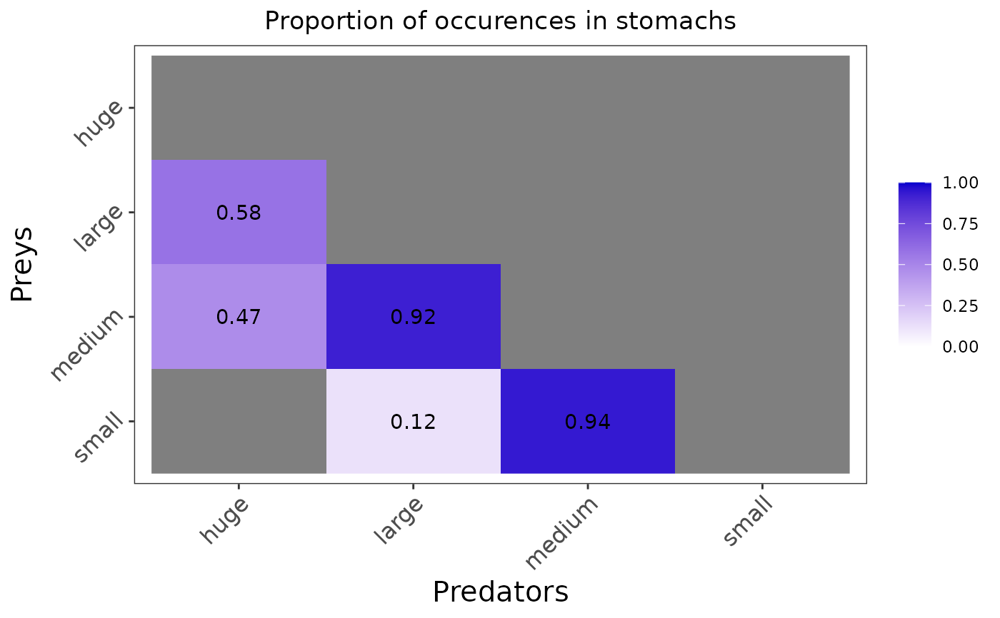
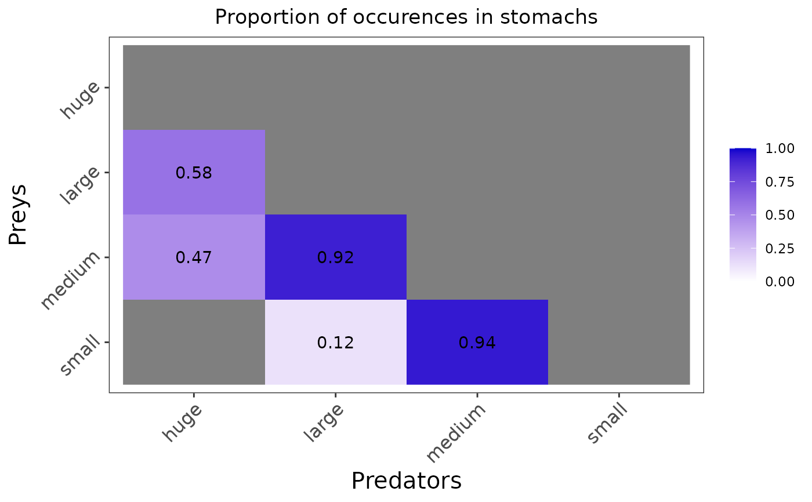
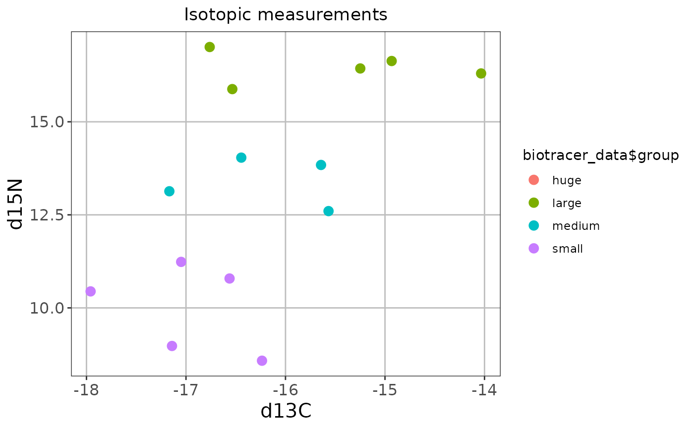
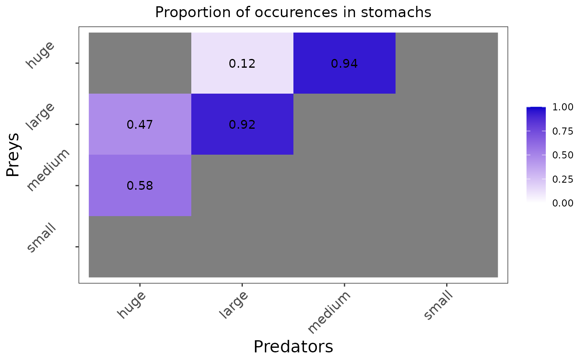
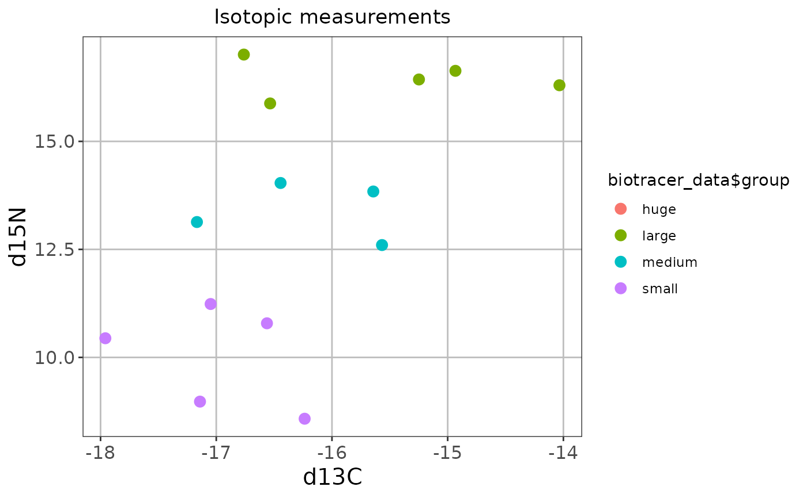
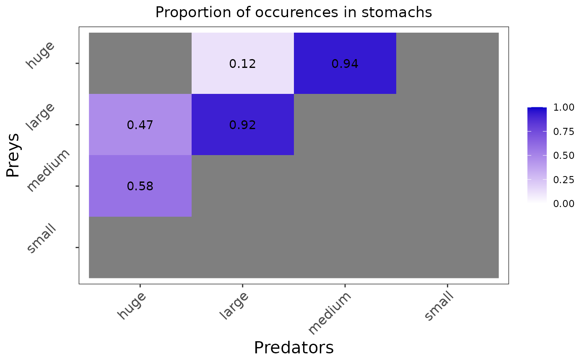

This function is used to plot the input biotracer and/or the stomach content data. You can use the function with only one parameter to plot only one kind of data.
The figure(s) can be saved as PNG using: save = TRUE, and the directory path to which
the figures are saved can be precised with: save_path = ".".
If only the stomach content data is entered, there will be a single raster plot containing the proportions of occurences in the stomachs.
For the biotracer data, there will be as many plots as the number of combinations of elements. For example if only two isotopes are entered, there will be a single biplot plotted. If three elements are entered (element A, B and C), three biplots will be shown : A vs. B, B vs. C and A vs. C.
plot_data(
biotracer_data = NULL,
stomach_data = NULL,
save = FALSE,
save_path = "."
)Arguments
- biotracer_data
A dataframe containing the biotracer data in the specific format: the first column corresponds to the trophic group or latin species and the remaining columns contains the biotracer measures
- stomach_data
A dataframe containing the stomach content data in a specific format: the first row contains the names of the prey trophic groups, the headers contains the names of the consumer / predator trophic groups, and the rest are the number of the predator's stomachs in which this prey was found. The last row contains the total number of non-empty stomach for the corresponding predator.
- save
A boolean describing whether the figure should be saved as PNG. By default the figures are not saved.
- save_path
A string describing the path to which the figures should be saved. By default the figures are saved in a temporary directory.
See also
plot_prior to plot the prior means or probability distribution(s),
plot_results to plot the posterior means or probability distribution(s)
Examples
example_biotracer_data <- read.csv(system.file("extdata", "example_biotracer_data.csv",
package = "EcoDiet"))
plot_data(biotracer_data = example_biotracer_data)
#> Warning: Use of `biotracer_data$group` is discouraged.
#> ℹ Use `group` instead.
 example_stomach_data <- read.csv(system.file("extdata", "example_stomach_data.csv",
package = "EcoDiet"))
plot_data(stomach_data = example_stomach_data)

plot_data(biotracer_data = example_biotracer_data,
stomach_data = example_stomach_data)
example_stomach_data <- read.csv(system.file("extdata", "example_stomach_data.csv",
package = "EcoDiet"))
plot_data(stomach_data = example_stomach_data)

plot_data(biotracer_data = example_biotracer_data,
stomach_data = example_stomach_data)
 #> Warning: Use of `biotracer_data$group` is discouraged.
#> ℹ Use `group` instead.

plot_data(biotracer_data = example_biotracer_data,
stomach_data = example_stomach_data,
save = TRUE, save_path = tempdir())

#> Warning: Use of `biotracer_data$group` is discouraged.
#> ℹ Use `group` instead.
#> Warning: Use of `biotracer_data$group` is discouraged.
#> ℹ Use `group` instead.
#> Warning: Use of `biotracer_data$group` is discouraged.
#> ℹ Use `group` instead.

plot_data(biotracer_data = example_biotracer_data,
stomach_data = example_stomach_data,
save = TRUE, save_path = tempdir())

#> Warning: Use of `biotracer_data$group` is discouraged.
#> ℹ Use `group` instead.
#> Warning: Use of `biotracer_data$group` is discouraged.
#> ℹ Use `group` instead.